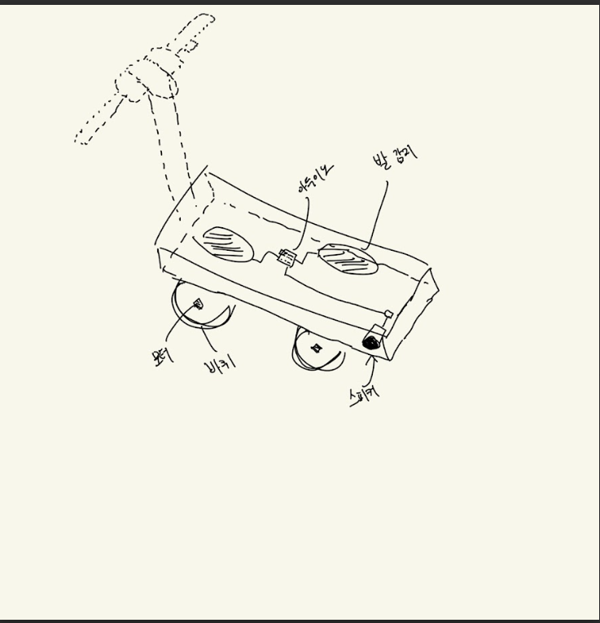
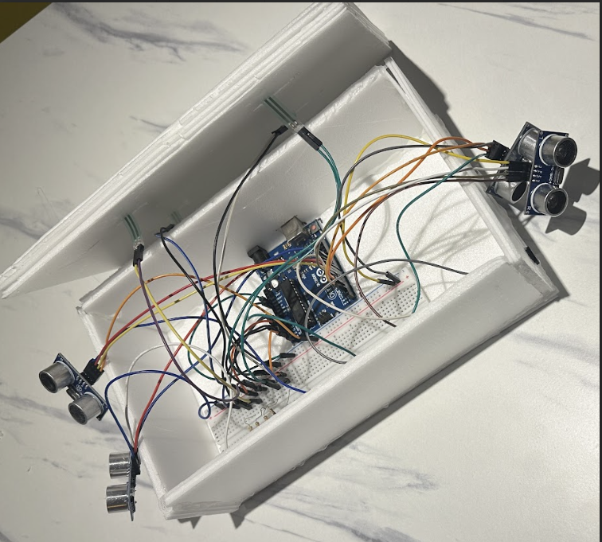

01. IoT 다인 탑승 감지 시스템
전동 킥보드 2인 탑승이라는 사회적 안전 문제를 해결하기 위해, 다중 센서 융합 기술을 활용하여 실시간으로 위반 상황을 감지하고 경고하는 하드웨어 솔루션입니다.
개발 과정 및 상세 내용 보기 (Click)
1. 활동 목적 및 배경
전동 킥보드 2인 탑승은 국내에서 명백한 도로교통법 위반임에도 불구하고 일상에서 빈번하게 발생하는 안전 문제입니다. 단순한 법적 규제만으로는 실질적인 억제 효과를 기대하기 어렵다는 문제의식에서 출발하여, 킥보드 자체에서 2인 탑승을 감지하고 경고를 발생시키는 기술적 안전장치를 직접 설계·구현하였습니다.
2. 핵심 기술 구현
아두이노 보드를 중심으로 두 가지 센서를 복합 활용한 이중 감지 시스템을 설계했습니다.
- FSR 압력 센서: 발판에 4개 배치, 3개 이상 동시 감지 시 조건 1 충족
- 초음파 센서: 앞뒤 각 2개 배치, 탑승자 간 거리 합이 설정값 이하일 때 조건 2 충족
- 경고 발생 로직: 두 조건이 동시에 충족되는 상황이 3회 이상 반복될 때만 부저 작동 → 일시적 오접촉을 필터링하고 실제 2인 탑승 상황에서만 경고 발생
3. 성과
센서 융합 기반의 조건 제어 로직을 직접 설계하고 구현하면서, 단일 센서의 오류 가능성을 보완하는 이중 검증 구조의 중요성을 체감했습니다. 나아가 교통 안전이라는 실질적인 사회 문제를 하드웨어와 소프트웨어의 결합으로 해결하는 과정을 경험하며, 기술이 사회에 기여할 수 있는 방향성에 대해 깊이 고민하는 계기가 되었습니다.


▲ 하드웨어 설계 및 센서 배치 구상도